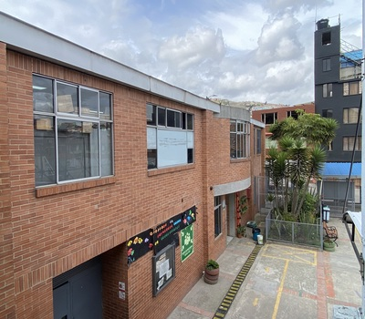

Hoja de matrícula
Formato institucional con la información del estudiante y su familia.
Descargar formatoEn el Colegio Distrital León de Greiff I.E.D. creemos en la educación como una oportunidad para descubrir talentos, desarrollar habilidades y construir proyectos de vida.
Queremos que nuestros estudiantes crezcan en un ambiente de respeto, responsabilidad, autonomía, solidaridad y sentido de pertenencia.
Invitamos a las familias a formar parte de nuestra comunidad educativa y a acompañar el proceso de formación de sus hijos e hijas.
Conoce más sobre nuestro colegio
Educar para transformar y construir futuro.
Acompañamos el desarrollo de nuestros estudiantes a lo largo de su trayectoria escolar.
Los primeros pasos para descubrir, explorar y aprender.
Construcción de conocimientos, valores y habilidades.
Desarrollo del pensamiento crítico y aprendizaje autónomo.
Preparación para nuevos retos académicos y personales.
Sigue estos pasos para preparar correctamente la documentación de tu hijo o hija.
Revisa la circular y las fechas oficiales del proceso de matrícula.
Obtén los documentos institucionales y los requisitos correspondientes.
Completa los formatos en computador, imprímelos y fírmarlos donde corresponda.
Presenta la documentación física en el colegio, según las indicaciones oficiales.
Descarga los formatos oficiales, diligéncialos y tenlos listos para el proceso.
Los formatos deben diligenciarse en computador, imprimirse, firmarse y entregarse físicamente. No se aceptan formatos diligenciados a mano.
Formato institucional con la información del estudiante y su familia.
Descargar formatoInformación importante para el acompañamiento y cuidado de la salud del estudiante.
Descargar formatoAutorización relacionada con el uso de imágenes del estudiante.
Descargar formatoFormulario del Sistema de Información para el Monitoreo, la Prevención y el Análisis de la Deserción Escolar.
Descargar formatoAccede a la carpeta institucional con los documentos disponibles para las familias.
Abrir carpetaConsulta las orientaciones, fechas e indicaciones comunicadas por la institución.
Consultar circularLos documentos requeridos pueden variar según el nivel escolar al que ingresa el estudiante. Por eso, es importante consultar la guía oficial antes de preparar la carpeta.
Consultar requisitos por nivel escolarSegún las indicaciones publicadas por el colegio, los documentos deben entregarse en:
Recuerda entregar los formatos impresos, firmados y acompañados de los documentos requeridos para el nivel escolar.
Visita los canales oficiales de la Secretaría de Educación y del Colegio León de Greiff.